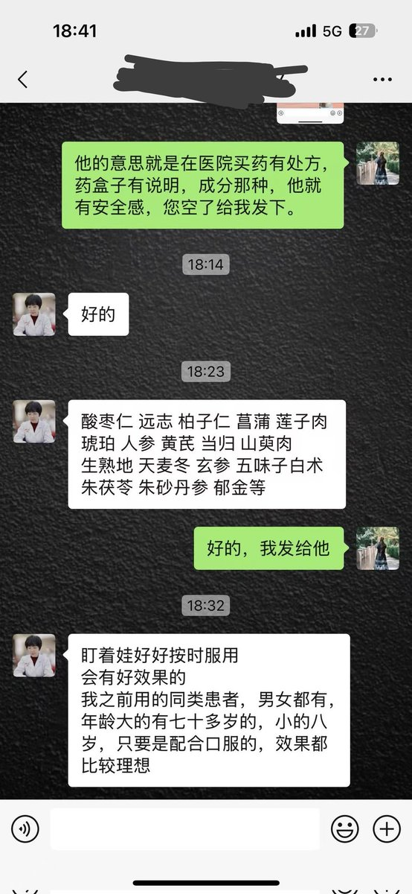
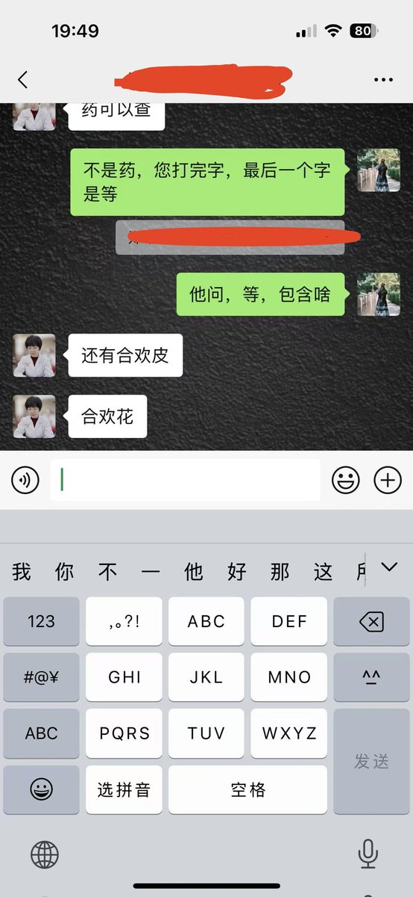
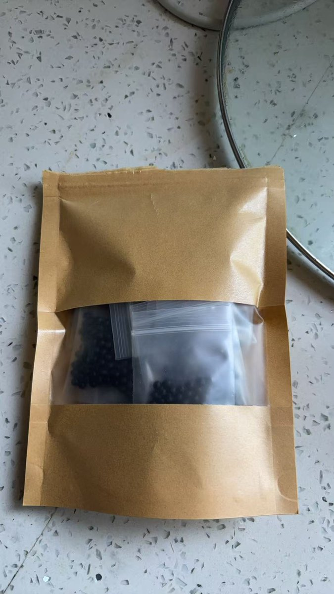

xx1012000456
@xx1012000456
@tICDh2g4Rz89685 酸枣仁有安眠，朱砂是镇静（汞中毒）合欢好像有一点血清素能，五味子可以掩盖部分转氨酶升高，因此被认为是护肝。别的东西以传统意义上滋补品为主，感觉加进来卖药+骗钱



符
@tICDh2g4Rz89685
有没有懂中药的推友 这是做什么的
我妈硬是要买这个一个月的量花了一千多 https://t.co/NgDdikoj4H